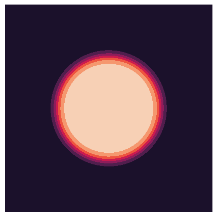
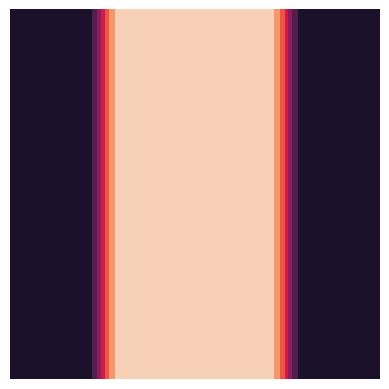

initialize#
This module is a collection of functions needed to initialize different parts of the simulation.
F.e. single_grain() initializes the domain to have a grain in the
center. init_eta_height() can compute the inital height of the
amplitudes and line_defect_x() and line_defect_y() calculate
the displacement for a given burgers vector.
Functions#
domain initializers#
- calculations.initialize.tanhmin(radius: array, eps: float) array#
Applies the tanh minimization function for initialization.
\[\frac{1}{2} \left[ 1 + \text{tanh} \left(- \frac{3r}{\varepsilon} \right) \right]\]- Parameters:
radius (np.array) – \(r\) radius
eps (float) – \(\varepsilon\) a measure for the intreface width
- Returns:
resulting tanhmin
- Return type:
np.array
- calculations.initialize.single_grain(xm: array, ym: array, config: dict) array#
Creates a 2d array with a circular grain in the middle. The grain will be generated using the
calculations.initialize.tanhmin()function. The radius, interface width and height are read from the config.- Parameters:
xm (np.array) – x-meshgrid
ym (np.array) – y-meshgrid
config (dict) – config object. Explicitely used entries are: initRadius, interfaceWidth, initEta
- Returns:
grain mesh
- Return type:
np.array
- calculations.initialize.center_line(xm: array, config: dict) array#
Uses the
calculations.initialize.tanhmin()function to initialize a vertical line in the middle of the domain. The radius, interface width and initial height are read from the config.- Parameters:
xm (np.array) – x-meshgrid
config (dict) – config; Explicitely used entries are: initRadius, interfaceWidth, initEta
- Returns:
center line meshgrid
- Return type:
np.array
Load from file#
- calculations.initialize.load_eta_from_file(shape: tuple[int], config: dict, eta_i: int) array#
Searches the sim_path in the config file for the “out_{eta_i}.txt” file, and loads its last entry into an array.
- Parameters:
shape (tuple[int]) – The shape of the resulting array.
config (dict) – config object. Explicitely used entries are: simPath
eta_i (int) – the index of which eta should be read.
- Returns:
resulting array
- Return type:
np.array
- calculations.initialize.load_n0_from_file(shape: tuple[int], config: dict) array#
Searches the simPath in the config file for the “n0.txt” file, to load its last entry.
- Parameters:
shape (tuple[int]) – The shape of the resulting array.
config (dict) – The config object. Explicitly used keys are: simPath
- Returns:
resulting n0 array.
- Return type:
np.array
- calculations.initialize.load_velocity_from_file(shape: tuple[int], config: dict) ndarray#
Loads a velocity from a file. Always reads the last line.
- Parameters:
shape (tuple[int]) – The shape the velocity needs to have. See the error section for more details on the limitations.
config (dict) –
- Raises:
AttributeError – Due to current limitations in read functions the velocity can only be read if it has a shape of (2, x, y) and x = y.
NotImplementedError – If x != y
- Return type:
np.ndarray
- calculations.initialize.load_from_file(config: dict, file_name: str, shape: tuple[int]) array#
Searches the sim_path in the config file for the file_name file, and loads its last entry into an array.
- Parameters:
shape (tuple[int]) – The shape of the resulting array.
config (dict) – config object. Explicitely used entries are: simPath
eta_i (int) – the index of which eta should be read.
- Returns:
resulting array
- Return type:
np.array
- calculations.initialize.detect_type(file_name: str) type#
Detects whether the values contained in the file are complex or float.
- Parameters:
file_name (str) – _description_
- Returns:
_description_
- Return type:
type
Config Parameter Initializers#
- calculations.initialize.init_config(config: dict)#
Sets the A, B, C, D values based on the n0, t, v, Bx and dB0 values in the config. These are calculated according to: (2)
The values are modified in place.
- Parameters:
config (dict) – config dictionary
- calculations.initialize.init_eta_height(config: dict, use_pm: bool = False, use_n0: bool = False)#
Sets the initEta key in the config based on the t, v, n0 and dB0 values.
- Parameters:
config (dict) – config dictionary
use_pm (bool, optional) – If True the (17) equation is used to calculate the height. The positive variateion is used if \(t > n_0\). Otherwise the negative version is used. If it is false, it is calculated via \(\frac{4 t}{45 v}\). Defaults to False.
use_n0 (bool, optional) – If False, n0 will be set to 0. Defaults to False.
- calculations.initialize.init_n0_height(config: dict, x0: float = 0.0, ATOL: float = 1e-05, RTOL: float = 1e-05, MAXITER: int = 1000000)#
Initializes the n0 height using the newton method. For more information on how this is done, see the ch:init_n0 section.
Sets the n0 parameter in the config, using the initEta, dB0, Bx, t and v values.
- Parameters:
config (dict) – config dictionary
x0 (float, optional) – The first guess. Defaults to 0.0.
ATOL (float, optional) – Absolute tolerance for stopping criteria Defaults to 1e-5.
RTOL (float, optional) – Relative tolerance for stopping criteria. Defaults to 1e-5.
MAXITER (float, optional) – Maximum number of iterations. A warning will be printed if it is reached. Defaults to 1000000.
Defects#
- calculations.initialize.line_defect_x(x: float, y: float, poisson_ratio: float, bx: float, offset: array = None) float#
Calculates \(u_x\) in eq. (12) for a line defect.
- Parameters:
x (float) – x coordinate
y (float) – y coordinate
poisson_ratio (float) –
bx (float) – x element of burgers vector
offset (None|np.aray) – offset for dislocation. If None, then offset is 0
- Returns:
x component of displacement for an edge dislocation
- Return type:
float
- calculations.initialize.line_defect_y(x: float, y: float, poisson_ratio: float, by: float, offset: array = None) float#
Calculates \(u_y\) in eq. (12) for a line defect.
- Parameters:
x (float) – x coordinate
y (float) – y coordinate
poisson_ratio (float) –
by (float) – y element of burgers vector
offset (None|np.aray) – offset for dislocation. If None, then offset is 0
- Returns:
y component of displacement for an edge dislocation
- Return type:
float